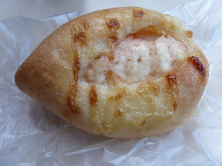
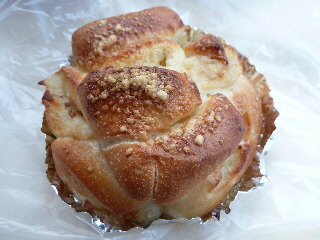
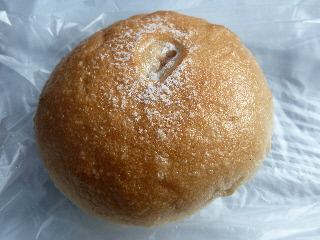
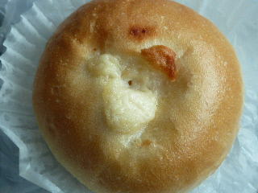
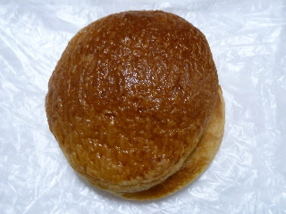
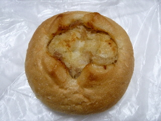
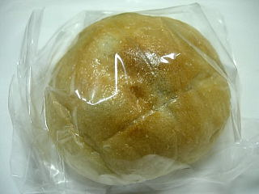
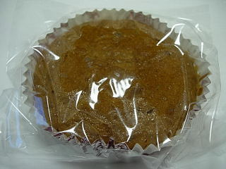
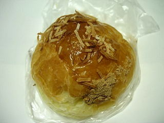

ルビュールのサラダっぽいお芋のパン。
更新日 : 2013/07/27
ルビュールでお芋のパンを2つ買いました。

明太ポテトです。

こっちはジャーマンポテトです。
味は全然ちがうんですけど、両方ともポテトサラダみたいな感じのやさしい甘さで好きな味でした。
島根県出雲市平田町7144 シェルピア中ノ島内
更新日 : 2013/07/27
ルビュールでお芋のパンを2つ買いました。

明太ポテトです。

こっちはジャーマンポテトです。
味は全然ちがうんですけど、両方ともポテトサラダみたいな感じのやさしい甘さで好きな味でした。
更新日 : 2012/02/12
チキングラタンの入った惣菜パンです。

濃い味のクリームシチュー味が美味しかったです。
このパンはとっても柔らかくて、下に付いている紙をはがすのに苦労しました。
更新日 : 2012/02/12
アンパンに豆乳クリームが入ったパンでした。

アンと豆乳クリームって合いますね。豆と豆で相性がいいのかも。
ふんわりとしたパンで、買ったときまだ温かかったので、ちょっとアンマンっぽいなって思いました。
更新日 : 2011/07/31
お店でビーフシチューのパンを見つけました。暑いのでビーフシチューってしばらく食べていないですが、パンだったら食べたいって思って買いました。

パイっぽいパンの中にビーフシチューが入っていました。ちょっと軽い感じのビーフシチューでした。

こっちはツナが入ったパンです。これはツナがいっぱい入ってて美味しかったです。私は惣菜系のパンは濃い味が好きです。
更新日 : 2010/02/07
甘納豆入りのパンです。

パンの中に入っちゃうと、甘納豆ってそんなに甘くないんですね。ちょっと甘い黒豆が入っている感じがしました。あんぱんとは比べられないくらい甘さ控えめで、フランスパン味がしっかりありました。なんとなくヘルシーな気分になりました。
更新日 : 2010/02/07
レーズンとくるみが入った黒糖蒸しパンです。

レーズン入りの蒸しパンって、王道で美味しいですね。プラス黒糖の甘さとくるみの歯ごたえの食感が楽しめました。盛り沢山の美味しさです。
更新日 : 2008/11/09
栗のクリームが入ったデニッシュパンです。秋らしい商品ですね。

栗味はマイルドだったので、デニッシュのバター味もちゃんと味わえました。上にちょこちょこ乗っかっているナッツのようなものがちょっとしたアクセントになってました。
更新日 : 2007/06/28
温泉「ゆらり」の近くのパン屋さん、ルビュールに行きました。
チョコシートってパンを食べたんですが、三角の平べったいマーブルチョコパン2枚でクリームをサンドしたパンでした。
マーブルチョコパンってチョコが少なめで、チョコ味や甘さが物足りないなーって思う事があるんですが、これはクリームがはいっていてちゃんと甘いので、菓子パンらしくてよかったです。
見た目大きくてボリュームがあるんですが、ふんわりとしたパンだったので食べやすかったです。
更新日 : 2006/05/04
新しくなった「ぶらり」を見に行った帰りに、すぐそばにあるパン屋さんに寄ってみました。お店の中に、パウンドケーキが勧めって書いてあったので、どれどれって感じで買って食べてみました。
ケーキはキメがとっても細かく、ドライな感じの商品でした。口の中にいれると、ケーキが口の中の水分にすーっと溶けて、甘い味がふわって広がりました。
たまごぼーろみたいな食感で、ちょっとなつかしい味わいでした。思い出横丁「ぶらり」の帰りに、丁度いいかなって商品です。